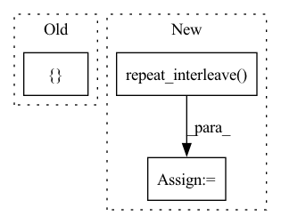

Pattern ID :21971
Before Change
encoder_mask = encoder_mask.unsqueeze(-1)
level = encoder_y[:, -1:].repeat(1, self.prediction_length, 1) // Level with Naive1
block_forecasts = [ levelAfter Change
encoder_mask = encoder_mask.unsqueeze(-1)
level = encoder_y[:, -1:].repeat(1, self.prediction_length, 1) // Level with Naive1
forecast_level = level.repeat_interleave( torch.tensor(self.output_size, device=level.device), dim=2)
// level with last available observation
if self.naive_level:
block_forecasts = [forecast_level]
block_backcasts = [encoder_y[:, -1:].repeat(1, self.context_length, 1)]
forecast = block_forecasts[0]In pattern: SUPERPATTERN
Frequency: 4
Non-data size: 3
Instances Fragment ID: 69823657
Project Name: jdb78/pytorch-forecasting
Commit Name: e7175c98af01f4c8f9aadb90c53aa4f0d1540931
Time: 2022-03-30
Author: beitner.jan@bcg.com
File Name: pytorch_forecasting/models/nhits/sub_modules.py
M Class Name: NHiTS
N Class Name: NHiTS
M Method Name: forward(6)
N Method Name: forward(6)
M Parent Class: nn.Module
N Parent Class: nn.Module
M File Name: pytorch_forecasting/models/nhits/sub_modules.py
N File Name: pytorch_forecasting/models/nhits/sub_modules.py
M Start Line: 328
M End Line: 332
N Start Line: 342
N End Line: 357
Before Change
torch.round(torch.tensor(len(true_alignments) / len(alignments_)))
)
alignments_upsampled = []
for i in range(len(alignments_)):
alignments_upsampled += [alignments_[i]] * upsample_factor
alignments_upsampled = alignments_upsampled[: len(true_alignments)]After Change
)
alignments_ = torch.tensor(alignments_)
alignments_upsampled = alignments_.repeat_interleave( upsample_factor)
alignments_upsampled = alignments_upsampled[: len(true_alignments)]
if len(true_alignments) > len(alignments_upsampled):
alignments_upsampled = torch.nn.functional.pad( Fragment ID: 69823661
Project Name: speechbrain/speechbrain
Commit Name: 9faba138ca038c0cc73eabff1974d56aa6e3960e
Time: 2020-06-18
Author: elenaras@yahoo.co.uk
File Name: speechbrain/alignment/aligner.py
M Class Name: HMMAligner
N Class Name: HMMAligner
M Method Name: _calc_accuracy_sent(4)
N Method Name: _calc_accuracy_sent(4)
M Parent Class: torch.nn.Module
N Parent Class: torch.nn.Module
M File Name: speechbrain/alignment/aligner.py
N File Name: speechbrain/alignment/aligner.py
M Start Line: 784
M End Line: 793
N Start Line: 784
N End Line: 789
Before Change
int backend tensor: Sampled points.
dy = 1.0 / self.N_strat
res_in_all_cubes = []
// Get indices
indices = anp.arange(len(nevals), like=nevals)
indices = astype(self._get_indices(indices), self.dtype)After Change
// For each hypercube i, repeat its position nevals[i] times
if self.backend == "torch":
// Autoray doesn"t yet support repeat.
position_indices = anp.repeat_interleave( nevals_arange, nevals)
else:
position_indices = anp.repeat(nevals_arange, nevals)
positions = positions[position_indices, :]
Fragment ID: 69823649
Project Name: esa/torchquad
Commit Name: 3d6c190f15cccfe658bb7d78ffdd0977d65b38c2
Time: 2022-03-14
Author: ga84muv@mytum.de
File Name: torchquad/integration/vegas_stratification.py
M Class Name: VEGASStratification
N Class Name: VEGASStratification
M Method Name: get_Y(2)
N Method Name: get_Y(2)
M Parent Class:
N Parent Class:
M File Name: torchquad/integration/vegas_stratification.py
N File Name: torchquad/integration/vegas_stratification.py
M Start Line: 159
M End Line: 187
N Start Line: 161
N End Line: 179
Before Change
signal_shape[-1] *= self.frame_period
mask = torch.ne(base_mask, 0).unsqueeze(-1)
size = [ -1After Change
// Make mask represents voiced region.
base_mask = torch.clip(p, min=0, max=1)
mask = torch.ne(base_mask, 0)
mask = torch.repeat_interleave( mask, self.frame_period, dim=-1)
// Extend right side for interpolation.
tmp_mask = torch.cat((base_mask[..., :1] * 0, base_mask), dim=-1)
tmp_mask = torch.eq(tmp_mask[..., 1:] - tmp_mask[..., :-1], -1) Fragment ID: 69823652
Project Name: sp-nitech/diffsptk
Commit Name: 72fcde4bb44021e8c00f3b017785d97afc934e29
Time: 2023-01-11
Author: takenori.yoshimura24@gmail.com
File Name: diffsptk/core/excite.py
M Class Name: ExcitationGeneration
N Class Name: ExcitationGeneration
M Method Name: forward(2)
N Method Name: forward(2)
M Parent Class: nn.Module
N Parent Class: nn.Module
M File Name: diffsptk/core/excite.py
N File Name: diffsptk/core/excite.py
M Start Line: 77
M End Line: 112
N Start Line: 77
N End Line: 105